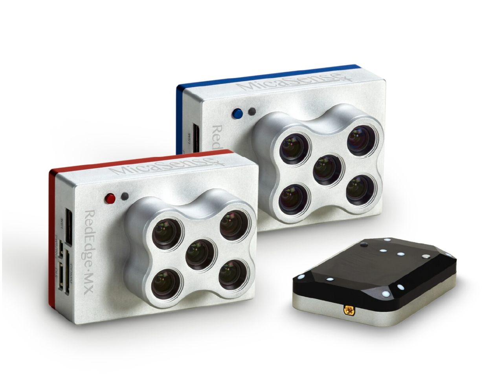
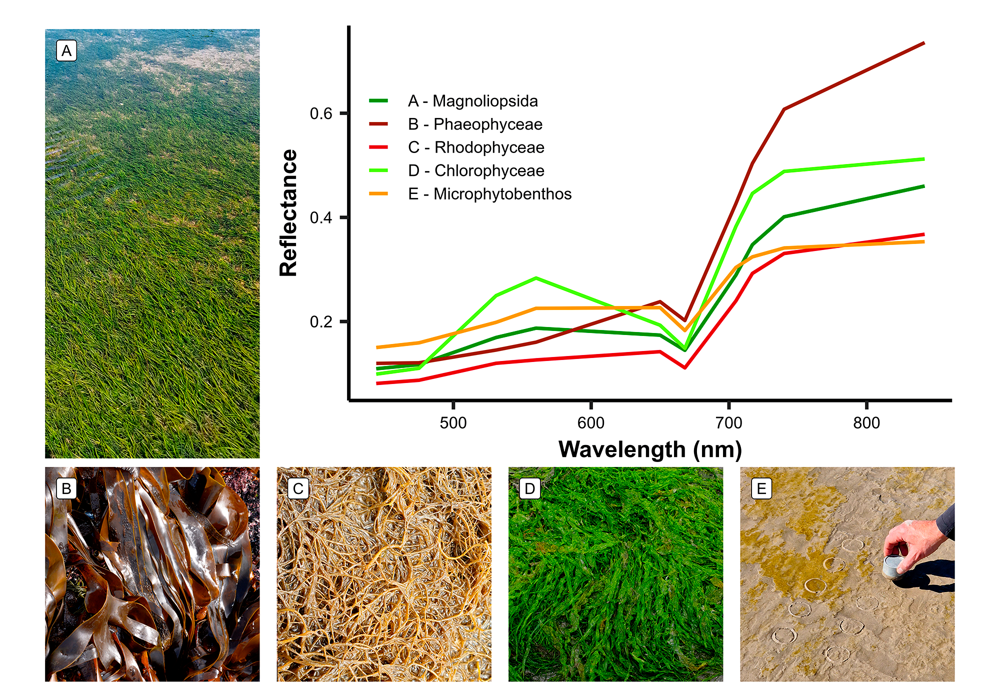

DISCOV
The Drone Intertidal Substrats Classification Of Vegetation (DISCOV) is a Neural Network classification model trained on a Micasense RedEdge-MX Dual multispectral drone camera.
This repository complements a scientific paper published by Oiry et al. in The Journal of Photogrammetry and Remote Sensing (Under review).


DISCOV is designed to classify intertidal soft bottom sediments, such as mudflats and sandflats, as well as the vegetation typically found in these habitats. The primary objective of this model is to accurately distinguish between seagrasses and green macroalgae. This distinction presents a significant challenge in remote sensing for accurately classifying coastal habitats, owing to the similar pigment compositions of these two types of vegetation. In the image on the right, you can see the spectral signature for each vegetation class identified by the model.
Input and Output of the model
Input
DISCOV processes input from a multilayer TIFF file containing 10 spectral bands. Band 1 corresponds to the 444 nm band of the Micasense RedEdge-MX Dual, and Band 10 corresponds to the one at 840 nm. The model has been trained using pixels processed into reflectance by Agisoft Metashape V2.1.1. The training pixels were encoded in 16-bit integers, with values ranging from 0 to 10,000.
Output
The version 1.0 of DISCOV gives has output a TIFF file with values ranging between 1 and 10:
1 - Microphytobenthos: Unicellular microalgae and/or Cyanobacteria that can colonize superficial sediments at low tide. They can form a biofilm covering several square kilometers. The primary class of microalgae forming these biofilms is Bacillariophyceae, commonly known as diatoms.
2 - Chlorophyceae: Green algae from the genus Ulva sp stranded on the sediment. The model has primarily been trained on Ulva lactuca, Ulva armoricana, and Ulva intestinalis . Therefore, I am uncertain how the model will behave when encountering other types of Chlorophyceae outside of the Ulvophyceae class, such as Caulerpa sp.).
3 - Magnoliopsida: Marine angiosperm of the genus Nanozostera sp. (syn. Zostera sp.). The model has been trained exclusively on pixels from Nanozostera noltei (syn. Zostera noltei).
4 - Phaeophyceae: Brown macrolalgae, stranded on the sediment or oftenly attached to rocks. Mainly trained from pixels of the genus Fucus sp.
5 - Rhodophyceae: Red Algae. This class was trained with the fewest pixels in DISCOV V1.0, using only pixels from Gracilaria sp. (likely Gracilaria vermiculophylla) observed in the Ria de Aveiro coastal lagoon, Portugal.
6 - Bare Sediment: The class is primarily trained on bare mud but also performs well on sand. It can be mistaken for Microphytobenthos because sometimes the bare mud contains a small amount of chlorophyll-a, which absorbs light around 668 nm.
7 - Sun Glint: Depending on the solar angle at the time of the flight, some pixels receive specular reflections directly from the sun, leading to an overestimation of the pixel’s total reflectance and distorting the spectral shape. This ‘sun glint’ class has been trained to prevent pixels affected by glint from being incorrectly classified as a type of vegetation. When there is residual water on the surface of the sediment, the probability of encountering glinted pixels increases.
8 - Water: When the water is shallow and has vegetation at the bottom, the spectral signature of the vegetation is slightly altered, especially in the infrared spectrum. This can lead to incorrect classification of the pixel. This class was primarily established to avoid such scenarios by ensuring that very shallow waters are correctly classified as water. It is also effective for deep waters.
9 - NA
10 - NA
How to use DISCOV 1.0 on your data ?
The current repositories of DISCOV include Python code, used to train the model and make predictions on images, as well as R code used to update the training dataset with your own data and to plot the results of the predictions.
Windows
The first step is to install all the necessary software, if you haven’t done so already. You will need to have R and Conda installed on your computer. For Conda, I recommend installing it directly through Conda-forge using the Windows installer, which can be downloaded here. R can be downloaded from this link. I recommend using RStudio, an integrated development environment specifically designed for R.
Alternatively to RStudio, you can use software like VS code which allows you to edit and run code written in both R and Python within the same working environment. Once Conda is installed, open the terminal (Press windows + R and enter “cmd” to open the terminal). Typing where conda should give a reply. If at this step you have an error, check your conda installation.
Now you can clone the repositories using this link. Save and extract it to a safe location. Once that is done, you can open the terminal in the folder by pressing the Ctrl key on your keyboard and right-clicking in the folder, then select ‘Open terminal’. Entering conda env create -f environment.yml will install the correct version of Python and all the dependencies needed for DISCOV to run.
If you encounter an error during the installation of pip dependencies, make sure you have enabled long path support in Windows.
Once that’s done, you should be ready to work with the model. You can activate the environment by typing conda activate NN_env in the terminal, or by selecting the NN_env kernel in Visual Studio Code.
MACOS
The first step is to install all the necessary software, if you haven’t done so already. You will need to have R and Conda installed on your mac. For Conda, I recommend installing it directly through Conda-forge using the MacOSX installer, which can be downloaded here. To run this script, open the terminal by pressing Command + Space and navigate to the Downloads folder using the ls and cd commands. Then, run sh Miniforge3-MacOSX-x86_64.sh and follow the instructions. Once it’s complete, press ‘yes’ or execute conda init and close the Terminal.
R can be downloaded from this link. I recommend using RStudio, an integrated development environment specifically designed for R. Alternatively to RStudio, you can use software like VS code which allows you to edit and run code written in both R and Python within the same working environment.
Once Conda is installed, open the terminal by pressing Command + Space and typing ‘terminal’. In the terminal, type where conda to check if it is installed correctly. If you receive a ‘conda not found’ message at this step, verify your Conda installation.
Now you can clone the repositories using this link. Save and extract it to a safe location. Once that is done, you can open the terminal and navigate to the DISCOV-MicaSense folder using the ls and cd commands. Entering conda env create -f environment_MACOSX.yml will install the correct version of Python and all the dependencies needed for DISCOV to run.
Once that’s done, you should be ready to work with the model. You can activate the environment by typing conda activate NN_env in the terminal, or by selecting the NN_env kernel in Visual Studio Code.